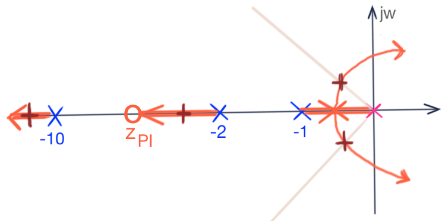

Maria van Schoor, Åndalsnes, Norway, Published on April 22, 2021, Unsplash.
Projeto de Controladores com Ação Integral
Continuando seção de trabalho anterior:
xxxxxxxxxx>> pwd % verificando se estamos na pasta de trabalho correta~/Documents/MATLAB/controle2_info>> format compact % menos linhas em branco no Matlab>> load planta % carregando dados da seção de trabalho anterior.Projeto de Ação Integral Pura
Segue equação do controlador com ação integral pura que iremos implementar no Matlab:
Onde ganho do controlador, que será definido usando Root Locus.
xxxxxxxxxx>> C_I = tf ( 1, [1 0 ] ) % ingressando eq. deste controlador no MatlabC_I = 1 - s Continuous-time transfer function.Incluindo eq. do controlador na malha de realimentação... Calculando a e traçando o gráfico do Root Locus deste sistema:
xxxxxxxxxx>> ftma_I = C_I * G;>> zpk(ftma_I) % verificando como ficou a ftma(s) 1 -------------------- s (s+10) (s+2) (s+1) Continuous-time zero/pole/gain model.>> rlocus(ftma_I)Segue gráfico do RL (sem "zoom"):
Seguindo com o projeto, destacando a região de interesse e encontrando o ganho comptatível com o requerido (intersecção do RL com a linha radial que correspondendo ao ):
xxxxxxxxxx>> % axis( [ xmin xmax ymin ymax] ) % sintaxe função axis()>> axis( [-2.5 1 -2 2] ) % realizando zoom na região de interesse>> hold on; sgrid(zeta, 0) % sobrepondo a reta (linha guia) do fator de amortecimento>> help rlocfind % instruções uso da função rlocfind() rlocfind Find root locus gains for a given set of roots. [K,POLES] = rlocfind(SYS) is used for interactive gain selection from the root locus plot of the SISO system SYS generated by RLOCUS. rlocfind puts up a crosshair cursor in the graphics window which is used to select a pole location on an existing root locus. The root locus gain associated with this point is returned in K and all the system poles for this gain are returned in POLES. [K,POLES] = rlocfind</strong>(SYS,P) takes a vector P of desired root locations and computes a root locus gain for each of these locations (i.e., a gain for which one of the closed-loop roots is near the desired location). The j-th entry of the vector K gives the computed gain for the location P(j), and the j-th column of the matrix POLES lists the resulting closed-loop poles. >> [K_i, polosMF] = rlocfind(ftma_I) % executando função rlocfind()Select a point in the graphics windowselected_point = -0.3395 + 0.4458iK_i = 7.4250polosMF = -9.9897 + 0.0000i -2.3168 + 0.0000i -0.3468 + 0.4478i -0.3468 - 0.4478iSegue gráfico do RL mostrando zona de interesse com ganho adotado:
Fechando a malha... e verificando como ficou a resposta ao degrau unitário:
xxxxxxxxxx>> ftmf_I = feedback( K_i*ftma_I, 1);>> figure; step(ftmf_I)Comparando resposta do controlador com ação integral pura com o do controlador proporcional:
xxxxxxxxxx>> figure; step(ftmf, ftmf_I)>> legend('Cont. Prop.', 'Ação Integral Pura')
Comentarios:
Única vantagem do controlador proporcional: ele é mais rápido ( tempo de assentamento) quase 4 vezes menor:
xxxxxxxxxx11.1/2.87ans = 3.8676Mas controlador Proporcional gera resposta em malha-fechada com erro elevado. Se aumentarmos o ganho do controlador proporcional, o erro baixa, mas o sistema eleva o sobre-sinal e apresenta maiores oscilações, aumentando o tempo de assentamento.
-- E o que acontece se esta malha fosse fechada com !?
A idéia é verificar se ainda anulamos o erro em regime permanente mesmo com ganho baixo no integrador:
xxxxxxxxxx>> K_i2=2;>> ftmf_I2 = feedback( K_i2*ftma_I, 1);>> figure; step(ftmf_I, ftmf_I2) % aproveitando para gerar gráfico com controlador anterior (ganho maior)>> legend('K_i=7.425', 'K_{i2}=2')>> gridComentários:
Comprova-se que o erro é anulado mesmo adotando-se um ganho baixo para a ação integral. O que importa neste caso, é a ação integral presente na do sisttema. Originalmente, a planta do sistema é do tipo 0, o que significa (pela Teoria do Erro) que o erro , não importa valor do ganho (do controlador Proporcional) adotado na malha fechada. Mas quando acrescentamos ação integral à malha por intermédio do controlador com ação integral, este sistema passa a ser do tipo 1, isto é, erro nulo para entrada degrau, não importa o valor adotado para o ganho em malha-fechada.
Controlador PI (Proporcional + Integral)
A página [Projeto do Controlador PI] mostra o diagrama em blocos de um PI e sua equação, que pode ser generalizada para:
onde corresponde ao zero do controlador PI (resultado do paralelismo da ação integral pura com o controlador proporcional).
Nosso problema agora é definir onde localizar o zero deste controlador. A idéia é raciocinar a posição do zero, esboçando posíveis Roots Locus para diferentes valores adotados para o zero. Podemos supor 3 casos distintos:
- zero entre o pólo integrador e o pólo mais lento da planta;
- zero entre os 2 pólos mais lentos da planta;
- zero entre o pólo "intermediário" e o pólo mais rápido da planta.
O próximo gráfico tenta mostar no mesmo RL, mas usando cores diferentes, como fica o RL para casa um dos 3 casos anteriores:
Ou em gráficos separados:
|  |
Depois de realizado estes esboços, percebemos que a melhor resposta (mais rápida), será obtida localizando o zero do controlador entre o pólo integrador (na origem, em ) e o pólo mais lento da planta (em ). Desta forma teremos pólos de MF complexos mais distantes do eixo e portanto o tempo de assentamento deve ser o menor possível.
xxxxxxxxxx>> % Definindo posição do zero do PI em z= -0,75>> C_PI = tf ( [1 +0.75], [1 0] )C_PI = s + 0.75 -------- s Continuous-time transfer function.>> ftma_PI = C_PI * G; % calculando a nova ftma(s)>> zpk(ftma_PI) % verificando como fica esta transfer function (s+0.75) -------------------- s (s+10) (s+2) (s+1) Continuous-time zero/pole/gain model.>> figure; rlocus(ftma_PI); % traçando o RL para este caso>> hold on; sgrid(zeta, 0) % sobrepondo linha guia para mesmos fatores de amortecimento>> axis([-2.5 0.5 -3 3]) $ realizando um zoom na zona de interesse neste caso>> [K_PI, polosMF] = rlocfind(ftma_PI) % encontrando local do ganhoSelect a point in the graphics windowselected_point = -1.0107 + 1.3932iK_PI = 26.2978polosMF = -10.3149 + 0.0000i -1.0236 + 1.3962i -1.0236 - 1.3962i -0.6380 + 0.0000iA próxima figura mostra o RL obtido para este caso, já ressaltando ganho adotado na zona de interesse:

Fechando a malha com :
xxxxxxxxxx>> ftmf_PI = feedback(K_PI*ftma_PI, 1);>> figure; step(ftmf_PI)>> gridSegue gráfico da Resposta ao degrau:
%
Comparando desempenho com os outros controladores já desenvolvidos até então:
xxxxxxxxxx>> figure; step(ftmf, ftmf_I, ftmf_PI)>> legend('Cont. Prop.', 'A••o Integral Pura', 'PI');Segue gráfico comparando resposta ao degrau obtida para os 3 controladores:
Comentários
Por conta dos alunos
Encerrando os trabalhos com o Matlab e deixando preparando para próxima seção de trabalho:
xxxxxxxxxx>> save planta % salva dados para continuação futura dos trabalhos>> diary off % fecha arquivo diary usado para compor este documento>> quit % sai do MatlabFim
🎵 Fernando Passold, em 07.05.2021